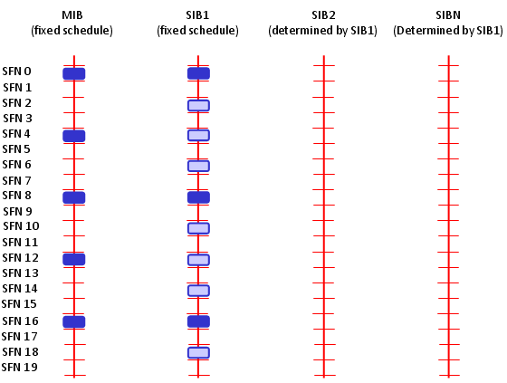

|
LTE Quick Reference Go Back To Index Home : www.sharetechnote.com |
|
|
MIB is special signal that carries the following information. As you see, you can get the System Bandwidth and SFN by decoding MIB.
i) DL Bandwidth, Number of Transmit Antenna, Reference Signal Transmit Power ii) System Frame Number (SFN) iii) PHICH Configuration iv) Transmit every 40 ms , repeat every 10 ms
MasterInformationBlock ::= SEQUENCE { dl-Bandwidth ENUMERATED { n6, n15, n25, n50, n75, n100}, phich-Config PHICH-Config, systemFrameNumber BIT STRING (SIZE (8)), spare BIT STRING (SIZE (10)) }
Following is the cycles in which MIB and SIB is transmitted.

|